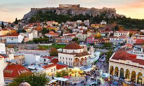

-CAPITAL DE GRECIA-
Atenas, la capital, es la ciudad más poblada del país. Otras ciudades como Salónica, El Pireo, Patras, Heraclión y Lárisa, son centros políticos, económicos y culturales a nivel regional.
La historia de Atenas se extiende más de tres mil años, lo que la convierte en una de las ciudades habitadas más antiguas. Durante la época clásica de Grecia, fue una poderosa ciudad estado que nació junto con el desarrollo de la navegación marítima del puerto de El Pireo y que tuvo un papel fundamental en el desarrollo de la democracia. También fue un centro cultural donde vivieron muchos de los grandes artistas, escritores y filósofos de la Antigüedad. Estas contribuciones de Atenas al pensamiento de su época tuvieron una gran influencia en el desarrollo de Grecia, de Roma y de la cultura occidental.
Atenas es una ciudad rica en restos arqueológicos de extraordinaria importancia, de los cuales el más famoso es el Partenónen la Acrópolis. Además de construcciones de la época clásica griega, también se conservan monumentos romanos y bizantinos, así como varias construcciones modernas notables.
